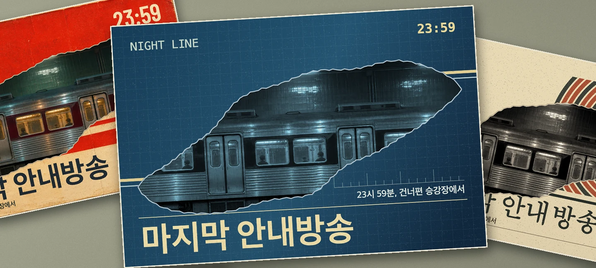

편집실로 이동
Night Studies
편집실
작업 보관함
After
Hours.
한밤의 장면으로 만드는
포스터, 사운드트랙, 사진집.
편집실 선택
Last Train
영화 포스터 편집실
Foley Club
효과음 편집실
Light Table
사진 시퀀스 편집실
막차 편집실 바로 열기

House edition
마지막 안내방송
종이 사이로 드러난 승강장. 열차가 지나갈 한 프레임을 골라 포스터로 인쇄하세요.
포스터 편집하기
최근 작업
보관함 열기
편집하려면 JavaScript를 켜 주세요.
막차
·
폴리 클럽
·
라이트 테이블